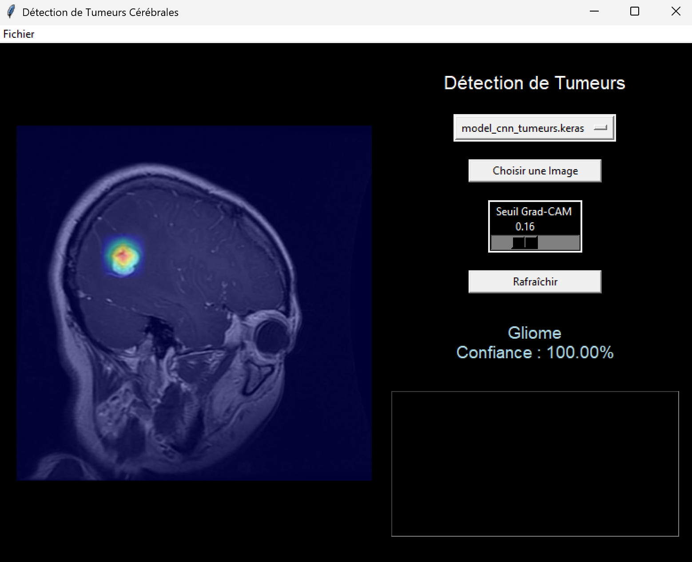

Bienvenue sur la page de présentation de l'application Brainstorm
"Fostering Innovation for Human Healthcare!"
>>> Brainstorm AI est une application médicale visant à améliorer la détection, la localisation des tumeurs sur les images médicales des patients grâce au Deep-learning
, à un modèle convolutionnel évolué (CNN) pour la classification/localisation des tumeurs et à un modèle U-Net pour effectuer la segmentation des images (segmentation pixel
par pixel avec labellisation -> pas de tumeur/tumeur) qui fait preuve d'une grande précision. Cette application est exploitable par des professionnels de santé (application de bureau)
et vise à améliorer le diagnostic ainsi que le suivi des patients en réduisant les erreurs de diagnostic. L'objectif est d'offrir une solution simple et facilement déployable sur la
majorité des systèmes d'exploitation (Windows, MacOs). Une première version de cette application s'occupe de classer par type de tumeurs, localiser les tumeurs cérébrales, puis segmenter
l'image pour une grande précision. De nouvelles versions seront bientôt étudiées.
Localisation d'un gliome d'environ 2 cm sur une image IRM avec l'application de bureau Brainstorm
Présentation de Brainstorm
Découvrez l'évolution du projet Brainstorm en défilant et cliquant les liens ci-dessous
16 Mai 2025 : Segmentation de l'image médicale avec le modèle U-Net du Projet de recherche (cf Mines de Saint-Etienne)
>>> L'objectif de cette segmentation de l'image patient est d'offrir une distinction claire entre la tumeur et le reste des tissus
grâce au modèle U-Net développé lors du projet de recherche effectué aux Mines de Saint-Etienne (à savoir l'étude de l'activité calcique
des neuronnes pour la caractérisation des maladies neurodégénératives). Ce modèle U-Net est strictement identique dans sa structure,
avec 4 couches dans l'encodeur/décodeur (sans compteur le Bottleneck), et ce dernier est basé sur 1 million
de paramètre. L'idée est donc d'offrir une segmentation plus précise si le praticien le souhaite (la méthode d'Activation mapping, bien que précise et fiable, ne permet
pas de faire une segmentation pixel par pixel). Les performances sont très satisfaisantes avec une accuracy approximative de 95% et une loss de 0,157. Via l'application,
l'utilisateur doit seulement appuyer sur le bouton "Segmentation U-Net" pour afficher la prédiction du modèle U-Net.
Segmentation de l'image avec la distinction Tumeur(s)/Sans Tumeurs pixel par pixel
Performances globales du modèle U-Net
12 Mai 2025 : Entraînement du modèle CNN pour la détection, classification et localisation de tumeurs mammaires
>>> Il s'agit ici d'un nouvel entraînement basé sur le même modèle mais avec un dataset d'entraînement différent, en particulier, il comporte d'autres classes (sans tumeur, benigne, maligne).
Les performances sur les données de test sont globalement satisfaisantes, même si inférieures aux performances de la détection des tumeurs cérébrales. Des améliorations sont à faire
en particulier au niveau de l'entraînement ainsi que sur la qualité du dataset.
Classification et localisation des tumeurs mammaires avec l'Application Brainstorm
06 Mai 2025 : Evaluation de la taille approximative d'une tumeur (Computer Vision OpenCV)
>>> Une nouvelle fonction a été implémentée dans l'application, à savoir celle permettant de connaître avec une bonne précision la taille de la
tumeur (10 à 15% de marge d'erreur en moyenne). Cette fonction utilise la banque de computer vision OpenCV afin de récupérer le contour à la fois du
crâne et de la prédiction. En fonction de ces deux paramètres ainsi que le tour de tête du patient, on peut déterminer avec une bonne approximation
la taille de cette tumeur afin d'étayer le diagnostic médical. Des améliorations sont en cours, notamment pour essayer de réduire la marge d'erreur entre la
taille calculée et la taille réelle de la tumeur.
Approximation de la taille d'un gliome: 0.97 cm avec l'Application Brainstorm, 1.1 cm en réalité
29 Avril 2025 : Amélioration de la précision de la localisation des petites tumeurs grâce à un entraînement effectué sur plus de 66,000 images
>>> Dans cette nouvelle étape du projet, l'idée était de tirer le meilleur potentiel de la génération de donnée afin de rendre le modèle encore plus robuste.
Afin d'obtenir ce dataset d'entraînement de plus de 66,000 images, l'objectif était de générer plus d'images, mais également de le faire avec des gaps plus
variés afin d'améliorer la robustesse dans la localisation précise des tumeurs, en particulier les plus petites et les plus inhabituelles par leur forme ou encore
leur taille.
Détection d'une tumeur de 2 cm avec l'Application Brainstorm
12 Avril 2025 : Application de bureau Brainstorm à usage professionnel
>>> L'application de bureau Brainstorm est enfin disponible sur Windows et MacOs! Cette première version adopte un design simpliste
et intuitif, avec la possibilité de choisir le modèle d'IA : l'application proposera à l'avenir d'autres modèles de détection pour
d'autres types de tumeurs afin d'élargir les utilisations. L'application est disponible en version V1.0 (pour obtenir des renseignements sur son fonctionnement,
veuillez me contacter par mail qui se trouve dans l'espace "Contact";)
Application de bureau Brainstorm
>>> L'interface comprend un choix de modèle d'IA, un accès au répertoire local pour charger une image, un curseur pour affiner la précision
du seuillage automatique des prédictions "Grad-Cam", un bouton pour rafraîchir la page, et bien évidemment, l'affichage du type de tumeur
avec l'indice de confiance de la prédiction !
19 Février 2025 : Implémentation du seuillage auto et manuel pour la détection des tumeurs + amélioration du modèle de classification
>>> Le seuillage automatique est une nouvelle fonctionnalité offerte par l'application. Elle permet de cibler directement la zone d'activation
qui participe à la prise de décision du modèle. L'application intègre désormais la classification des tumeurs avec un modèle CNN qui possède plus de filtres
et donc plus de paramètres. Les performances sont globalement satisfaisantes et en améliorations avec une Accuracy de 97,8 % et une Loss de 0.10. Le modèle est globalement
plus robuste, notamment grâce à l'augmentation des données du dataset d'entraînement.
Résultats de la localisation d'une tumeur cérébrale de type méningiome

Résultats de la localisation d'une tumeur cérébrale de type gliome Résultats de la localisation sans tumeur
10 Février 2025 : Activation Mapping
>>> Implémentation de la méthode "activation mapping"
pour cibler et localiser les zones qui contribuent le plus à la prise
de décision du modèle. Voici ci-dessous un exemple du fonctionnement
sur deux images médicales de cette méthode de détection
Résultats de la localisation de la tumeur cérébrale (gliome) sur deux exemples (données
de tests)
L'intérêt d'utiliser cette méthode réside dans la capacité à obtenir
la localisation de la tumeur avec une grande précision via l'application
d'un seuillage et d'un filtrage. Néanmoins, comme on peut le constater,
le filtrage n'est pas encore optimal (notamment au niveau du crâne).
Cela fera l'objet de la prochaine amélioration.
Prédiction de cancer chez le patient avec localisation de la tumeur sur l'application
Brainstorm
12 Décembre 2024 : Création de la version bêta de l'application Brainstorm
>>> Création d'une première version de l'interface utilisateur avec le modèle
CNN développé précédemment. Cette intégration du modèle est modulaire, permettant
ainsi de continuer son amélioration en parallèle du développement de l'application
et des fonctionalités comme la localisation de la tumeur (cette fonctionnalité sera intégrée
prochainement).
Dans cette première version de l'application, l'objectif est
d'offrir une interface simple d'utilisation, avec un lien pour
charger l'image depuis un répertoire local. Le modèle CNN implémenté
dans l'application se charge ainsi à donner une évaluation de la prédiction,
et confirme si le patient possède une tumeur ou non.
7 Novembre 2024 : Elaboration d'un modèle capable de détecter la présence d'une tumeur et
perfectionnement du modèle
>>> L'application repose sur un modèle CNN conçu pour détecter et avertir le
praticien de l'éventuelle présence d'une tumeur chez un patient. Le modèle est entraîné avec
plus de 1780 images, et validé avec 1190 images médicales sur 20 epochs. Les performances sont
globalement satisfaisantes, avec une accuracy de 99% et une loss de 0.03 ~ 0.04 sur les données de
validation,
sans overfitting!
Résultats du modèle CNN développé
Courbes de l'Accuracy et de la Loss
2 Novembre 2024 : Elaboration d'un modèle capable de détecter une tumeur et de classifier par type de
tumeurs
>>> L'application repose sur un modèle CNN spécialement conçu pour détecter des tumeurs et classer une
image médicale
d'un patient selon le type de tumeurs (méningiome, gliome, etc...). Le praticien peut donc déterminer
avec une plus grande précision de l'éventuelle présence d'une tumeur chez un patient.
Le modèle est entraîné avec plus de 1780 images, et validé avec 1190 images médicales sur 30 epochs. Les
performances sont
globalement satisfaisantes, avec une accuracy de 91% et une loss de ~ 0.27 sur les données de
validation, sans overfitting.
Résultats du modèle CNN développé
Courbes de l'Accuracy et de la Loss
L'intérêt de ce modèle réside dans l'utilisation de la fonction "prédiction" pour évaluer si une image
médicale
comporte une tumeur de type gliome, méningiome, etc ou si le patient n'a aucune tumeur. Voici ci-dessous
deux exemples de prédiction basés sur le modèle
Prédiction du type de cancer pour deux images tests
Présentation de NeuronDetect
Découvrez l'évolution du projet NeuronDetect en cliquant sur les liens
20 Mars 2025 : Réalisation d'un U-Net permettant la détection automatique de l'activité calcique des neurones
>>> Dans ce projet, nous cherchons à détecter à l'aide d'un modèle convolutionnel de type U-Net les activités calciques
de neurones situés dans la moelle épinière afin d'automatiser cette détection. Ce modèle U-Net est plus évolué que le CNN
utilisé pour le projet Brainstorm, puisqu'il comporte trois parties: un encodeur, un bottleneck ainsi qu'un décodeur.
L'objectif de ce projet est donc de récupérer les prédictions du modèle et d'y effectuer un post-traitement pour repérer ces neurones
en les entourant.
Résultats Post-traitement de la détection de l'activité calcique des neurones
Une étape cruciale du projet consistait à effectuer un "labeling" de qualité pour nos datasets d'entrée. L'objectif consiste,
dans un premier temps, à réduire les différents bruits électroniques liés au microscope (ils se remarquent avec l'apparition de
points lumineux, assimilables à des neurones). Un prétraitement est donc nécessaire pour obtenir des labels de qualité pour l'entraînement
du modèle (on cherche à fabriquer des masques pour les labels). Pour cela, des filtres spécifiques ont été utilisés, dont un filtre gaussian
pour appliquer un flou et réduire la taille ainsi que l'intensité des (petits) points lumineux. Une autre technique consistait à appliquer
un filtre bilatéral pour également appliquer un flou sur des grandes aires, tout en améliorant les contours délimitant deux espaces (dans notre
cas, les neurones et le fond de l'image). Enfin, une dernière étape consiste à appliquer un seuil pour "binariser" le masque en deux labels distincts:
"0" pour le fond de l'image et "1" pour les neurones). On obtient au final ce type de label-masque!
Exemple d'image d'un dataset d'entraînement Masque associé à l'image précédente
Fondateur
Je suis Grégory BERTRAND, fondateur de Brainstorm AI et développeur de l'application Brainstorm,
étudiant ingénieur en 3ème année aux Mines de Saint-Etienne et enfin
stagiaire - Ingénieur Système en Imagerie Médicale chez Thales. Passionné
par les nouvelles technologies depuis mon adolescence, je m'intéresse depuis
maintenant plus de 3 ans à l'application du Machine Learning dans la vie
quotidienne, et en particulier dans le domaine du diagnostic médical.
Contact
Si l'application Brainstorm vous intéresse, ou que vous avez simplement des questions concernant l'application,
vous pouvez me contacter à l'adresse mail suivante : gregory.bertrand@etu.emse.fr